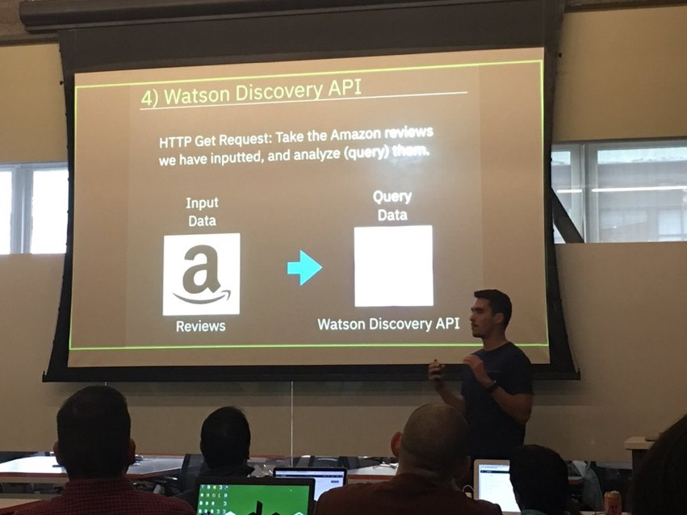
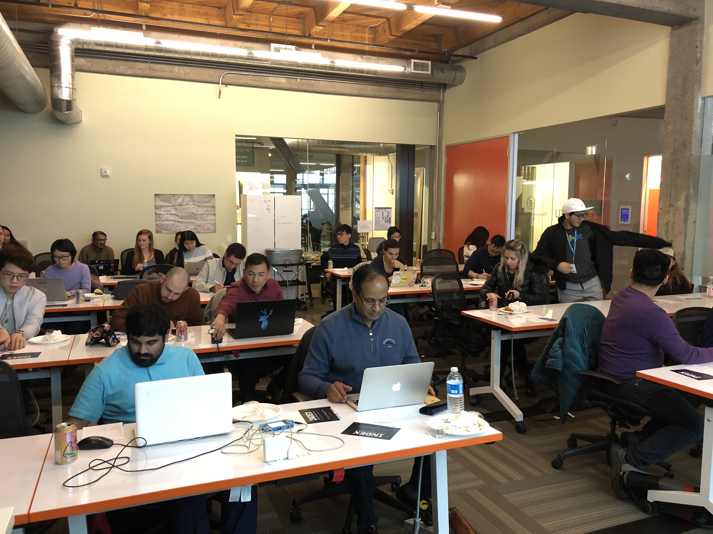

I could pass out. I could just throw up in the middle of my presentation. I could just not have the ability to speak anymore — I would not be able to form any sentences. I’m trying to fall asleep the night before my first lunch and learn, but all these horrible thoughts are racing through my mind. Somehow I manage to fall asleep, and actually slept over 7 hours…amazing.
So I scramble to add a few more slides, change my code up a little bit, do a last-minute screen recording of my app, and do a practice run. Of course, when I do the practice run, I go over 45 minutes and forget to actually get to the venue at 11, when I had planned to get there. I was a bit frantic, but the extra practice helped. I setup, AV and everything works, and by 12PM, when the session was actually supposed to start, only 1 person shows up. Hmm…there were over 70 people signed up…
It’s Time
From 12 till 12:15, the 15 minutes leading up to my presentation, the time went by really slow. People started trickling in, and by the start of the actual presentation, the room was more or less full.

The Presentation
I definitely sped up a bit due to nervousness. I think if I were to do it over again, I would add a few more slides. I did end it a bit short, but overall I felt good about it. In terms of actual presentation, I felt like I was more or less clear, didn’t stutter TOO much, didn’t say UMM that much, but of course, I can always improve on that.

Wow, that went by fast
After the presentation, I talked to a couple of the attendees and got some great feedback. A couple other comments I got after the session is that more hands on coding examples of doing API calls would have been nice. I was actually thinking of adding some of that this morning, but unfortunately I didn’t have the time. Also, I need to have STORIES for EVERYTHING. As in, why would you need to make this API call? Put it into context. I really didn’t think much about this part, but I understand that by learning why, people can really put things into context and remember it later on.
Can’t wait for the next one
I’m happy to finally get my first real presentation for IBM out of the way. I feel like I can only improve from here. Now that i’m starting to focus on blockchain too, I feel like i’ll be that much more excited to share my knowledge with others. Thanks to everyone that joined me today, and hope to see you next time!